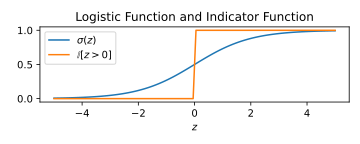
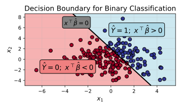

Lecture 3: Introduction to Learning (Cont.), Classification, Logistic Regression
Learning Objectives
By the end of this lecture, you will be able to:
- Define the log-odds statistical model for binary classification, and justify its advantages
- Derive logistic regression through empirical risk minimization (ERM)
- Construct predictions for classifiers based on different notions of risk
Supervised Learning for Classification: Statistical Perspective
In the previous lecture, we developed a statistical perspective of the supervised learning procedure, and we worked through the steps of the learning procedure in a regression context.
| Step | CS Perspective | Statistical Perspective | Example: Linear Regression |
|---|---|---|---|
| 2 | Predictive Model | Hypothesis Class | \(\hat f(X) = X^\top \hat\beta\) |
| 3 | Training | Estimation | \(\hat f_\mathrm{ERM}(X) = X^\top \hat\beta_\mathrm{OLS}\) |
| 6 | Testing | Prediction | \(\hat{Y}_\mathrm{new} = \hat f_\mathrm{ERM}(X)\) |
In this lecture, we will work through the same steps, but this time for classification problems.
Classification versus regression:
- In regression, the response variable \(Y\) is continuous (i.e. \(\mathcal Y = \mathbb{R}\)).
- In binary classification, the response variable \(Y\) is boolean (i.e. \(\mathcal Y = \{0, 1\}\)), where
- \(Y = 1\) represents the “positive” class
- \(Y = 0\) represents the “negative” class
- (You might see \(Y = -1\) used to denote the negative class. It doesn’t make a huge difference, but we’ll stick with \(Y=0\) for mathematical simplicity.)
- The goal remains the same: learn a function \(\hat{f}: \mathbb{R}^p \to \{0, 1\}\) that accurately predicts the class label for new observations.
Let’s now derive a statistical model estimation procedure, and prediction rule for binary classification!
Statistical Models for Classification
Recall that, formally, a statistical model is a set of conditional distributions over \(Y \mid X\).
In regression, as we saw last lecture, we tend to use statistical models that characterize \(Y\) as the sum of a deterministic/learnable component \(f(X)\) and a Gaussian/unlearnable component \(\varepsilon\).
This implicitly places a Gaussian distribution on \(Y \mid X\):
\[ Y = f(X) + \varepsilon, \:\: \varepsilon \sim \mathcal N(0, \sigma^2) \quad \Leftrightarrow \quad Y \mid X \sim \mathcal N( f(X), \sigma^2 ). \]
Crucially, we will have a valid Gaussian distribution for any \(f(X) \in (-\infty, \infty).\) This property makes \(f\) easy to approximate with linear models.
For classification, it’s easier to start from the set of conditional distributions and derive the learnable/unlearnable components.
The most general set of distributions is:
\[ Y \mid X \sim \mathrm{Bern}( \pi_1(X) ), \qquad \pi_1(x) = \mathbb P(Y=1 \mid X=x), \qquad \pi_1 \text{ is some f'n with range } [0, 1]. \]
Intuitively, we think of the class assignment as a weighted coin flip (the unlearnable component), where the covariates determine the weighting of the coin (the learnable bit).
However, \(\pi_1(x) = \mathbb P(Y=1 \mid X=x)\) is not the most natural parameterization of the learnable component.
In order to be a valid Bernoulli distribution, \(\pi_1(x)\) must be between \([0, 1]\).
When it comes to approximating \(\pi_1(x)\), we’d be restricted to hypothesis classes where the functions have this range constraint.
This constraint would exclude linear models.
Why?
Consider \(\pi_1(x) = x^\top \beta\). What’s the problem with this?
- If \(x^\top \beta > 1\), then \(\pi_1(x) = \mathbb{P}(Y=1|X=x) > 1\), which is not a valid probability.
- If \(x^\top \beta < 0\), then \(\pi_1(x) = \mathbb{P}(Y=1|X=x) < 0\), which is also not a valid probability.
- If \(x^\top \beta > 1\), then \(\pi_1(x) = \mathbb{P}(Y=1|X=x) > 1\), which is not a valid probability.
The Log-Odds Parameterization
Instead of defining distributions through \(\pi_1(X)\) directly, we will instead define distributions through the log-odds ratio
Defining \(\pi_0(x) = \mathbb P(Y=0|X=x) = 1 - \mathbb P(Y=1|X=x)\), the log-odds ratio is: \[f(x) := \log\left(\frac{\pi_1(x)}{\pi_0(x)}\right) = \log\left(\frac{\pi_1(x)}{1 - \pi_1(x)}\right)\]
I claim that this ratio can take any real value, i.e. \(f(x) \in \mathbb{R}\).
\(\pi_1(x)\) Odds Ratio \(f(x)\) (Log Odds Ratio) \(\approx 1\) \(\pi_1(x) / \pi_0(x) \to \infty\) \(f(x) \to \infty\) \(\approx 0\) \(\pi_1(x) / \pi_0(x) \to 0\) \(f(x) \to -\infty\) We can convert the log-odds ratio \(f(x)\) to \(\pi_1(x)\)…
\[ \pi_1(x) = \sigma(f(x)), \qquad \sigma(f(x)) := \frac{\exp(f(x))}{\exp(f(x)) + 1} = \frac{1}{1 + \exp(-f(x))}\]
Derivation (it’s just algebra)
Starting from the definition of \(f(x)\) and solving for \(\pi_1(x)\): \[\begin{align*} f(x) &= \log\left(\frac{\pi_1(x)}{1 - \pi_1(x)}\right) \\ \exp(f(x)) &= \frac{\pi_1(x)}{1 - \pi_1(x)} \\ \exp(f(x)) \, (1 - \pi_1(x)) &= \pi_1(x) \\ \exp(f(x)) &= \pi_1(x) + \exp(f(x)) \, \pi_1(x) \\ \exp(f(x)) &= \pi_1(x) \, (1 + \exp(f(x))) \\ \pi_1(x) &= \frac{\exp(f(x))}{\exp(f(x)) + 1}. \end{align*}\] The second, equivalent form follows by multiplying the numerator and denominator by \(\exp(-f(x))\): \[\begin{align*} \pi_1(x) = \frac{\exp(f(x))}{\exp(f(x)) + 1} = \frac{\exp(f(x)) \, \exp(-f(x))}{\left(\exp(f(x)) + 1\right)\exp(-f(x))} = \frac{1}{1 + \exp(-f(x))}. \end{align*}\]
… and so we can use \(f\) to define the “learnable” component of our statistical model:
\[ Y \mid X \sim \mathrm{Bern}(\sigma(f(X))), \qquad f \text{ is some f'n (with no range constraints)}.\]
(As with regression, we’ll want to limit \(f\) to some smaller class of functions if we hope to do any sort of useful analysis.)
The function \(\sigma(\cdot)\) in the above equation is known as the logistic function or sigmoid function. It has many useful properties
- Range: \(\sigma(z) \in (0, 1)\) for all \(z \in \mathbb{R}\)
- Symmetric: \(\sigma(-z) = 1 - \sigma(z)\)
- Convenient derivative: \(\sigma'(z) = \sigma(z)(1 - \sigma(z))\)
It can be seen as a “smooth approximation” to the 0-1 step function:

Hypothesis Class
Since the “learnable” portion of our statistical model – the log-odds ratio \(f(X)\) – is any real-valued function, we can consider pretty much any hypothesis class.
As with regression, it’s not a bad idea to consider linear functions:
\[ \mathcal H = \left\{ \hat f \: : \: \hat f(X) = X^\top \hat \beta, \: \hat \beta \in \mathbb R^p \right\} \]
If we assume that our statistical model has the same functional form (i.e. \(f(X) = X^\top \beta\) for some \(\beta\)), then we have that:
\[ Y \mid X \sim \mathrm{Bern}(\sigma(X^\top \beta)) = \mathrm{Bern} \left( \frac{1}{1 + \exp(-X^\top \beta)} \right), \] or alternatively, \[ \mathbb P(Y=1 \mid X=x) = \frac{1}{1 + \exp(-x^\top \beta)}. \]
You should recognize this equation from STAT 306 as logistic regression.
Estimation
As with regression, we estimate the parameters \(\beta\) through empirical risk minimization (ERM): we choose the \(\hat \beta\) that minimizes the average loss over the training data,
\[\hat{\beta}_\mathrm{ERM} = \mathrm{argmin}_{\beta} \frac{1}{n} \sum_{i=1}^n L(Y_i, \hat f(X_i)).\]
For classification, it doesn’t make sense to use the squared error loss. However, deriving a good loss function is a bit tricky:
ERM with the logistic loss:
Before suggesting a loss function, let’s think intuitively through how we’d like to penalize predictions:
- If \(\hat f(X)\) is very positive, then \(\hat \pi_1(X) \gg \hat \pi_0(X)\) (where \(\hat \pi_1\) and \(\hat \pi_0\) are our predicted conditional probabilities for \(Y=1\) and \(Y=0\) respectively). This prediction would be bad if \(Y=0\), but great if \(Y=1\).
- If \(\hat f(X)\) is very negative, the opposite is true: \(\hat \pi_1(X) \ll \hat \pi_0(X)\), bad prediction for \(Y=1\), great for \(Y=0\).
- If \(\hat f(X) \approx 0\), then \(\hat \pi_1(X) \approx \hat \pi_0(X)\). This prediction signifies uncertainty over \(Y=0\) versus \(Y=1\). While not as bad as confidently predicting the incorrect class, there should still be some loss since we’d prefer a correct prediction.
To that end, consider the following function (which we’ll derive from first principles in a second), known as the logistic loss (also referred to as the cross-entropy loss):
\[ \begin{gather} L_\mathrm{logistic}(Y, \hat f(X)) = -Y \log \hat \pi_1(X) - (1 - Y) \log \hat \pi_0(X) \\ \qquad \hat \pi_1(X) = \sigma(\hat f(X)), \quad \hat \pi_0(X) = 1 - \sigma(\hat f(X)). \end{gather} \]
Let’s check that this loss matches the desiderata above. Since \(Y \in \{0, 1\}\), exactly one of the two terms is ever “active”:
- If \(Y = 1\), the loss is \(-\log \hat \pi_1(X)\). This is small (near \(0\)) when \(\hat \pi_1(X) \approx 1\) (i.e. \(\hat f(X)\) very positive), and blows up to \(+\infty\) as \(\hat \pi_1(X) \to 0\) (i.e. \(\hat f(X)\) very negative).
- If \(Y = 0\), the loss is \(-\log \hat \pi_0(X)\), which is the mirror image: small when \(\hat f(X)\) is very negative, and \(\to +\infty\) when \(\hat f(X)\) is very positive.
- If \(\hat f(X) \approx 0\), then \(\hat \pi_1(X) \approx \hat \pi_0(X) \approx \tfrac{1}{2}\), so the loss is \(-\log \tfrac{1}{2} = \log 2 \approx 0.69\) regardless of \(Y\) – a moderate penalty for “hedging,” exactly as we wanted.
Minimizing the average logistic loss across our data is equivalent to maximum likelihood estimation of \(\beta\).
Under the model \(Y_i \mid X_i \sim \mathrm{Bern}(\hat \pi_1(X_i))\), the likelihood of the training labels is \[\begin{align*} \prod_{i=1}^n \hat \pi_1(X_i)^{Y_i} \, \hat \pi_0(X_i)^{1 - Y_i}, \end{align*}\] where the exponents “select” the correct probability: the \(i\)-th factor is \(\hat \pi_1(X_i)\) when \(Y_i = 1\) and \(\hat \pi_0(X_i)\) when \(Y_i = 0\). Taking the negative logarithm turns the product into a sum: \[\begin{align*} -\log \prod_{i=1}^n \hat \pi_1(X_i)^{Y_i} \, \hat \pi_0(X_i)^{1 - Y_i} &= \sum_{i=1}^n \Big[ -Y_i \log \hat \pi_1(X_i) - (1 - Y_i) \log \hat \pi_0(X_i) \Big] \\ &= \sum_{i=1}^n L_\mathrm{logistic}(Y_i, \hat f(X_i)). \end{align*}\] So minimizing \(\tfrac{1}{n} \sum_i L_\mathrm{logistic}(Y_i, \hat f(X_i))\) is the same as maximizing the likelihood.
Putting it together, for logistic regression we have:
\[ \hat \beta_\mathrm{ERM} = \mathrm{argmin}_{\beta} \frac{1}{n} \sum_{i=1}^n \left[ -Y_i \log \sigma(X_i^\top \beta) - (1 - Y_i) \log\left(1 - \sigma(X_i^\top \beta)\right) \right]. \]
Unlike with linear regression, there is no closed-form equation to express \(\hat \beta_\mathrm{ERM}\) for classification. The optimization equation above is the most we can simplify it. We will need to rely on numerical optimization techniques to obtain \(\hat \beta_\mathrm{ERM}\), which we will discuss later in the course.
Prediction
Let’s discuss how we can make predictions using the logistic regression model given some new covariates \(X_\mathrm{new}\).
- With regression, we simply used the prediction \(\hat Y_\mathrm{new} = \hat f(X_\mathrm{new})\).
- With classification, we can’t use the same strategy, since \(\hat Y_\mathrm{new}\) must be 0 or 1, and \(\hat f(X_\mathrm{new})\) is real-valued.
We need to put a bit more care into making a prediction \(\hat Y\) given our estimated log-odds ratio, for which we turn to the field of decision theory.
Making Predictions Using Decision Theory
We begin by assuming there is some cost \(c\) associated with an incorrect prediction.
A common cost-function for classification is:
\[ c(Y_\mathrm{new}, \hat Y_\mathrm{new}) = \begin{cases} 1 & Y_\mathrm{new} \ne \hat Y_\mathrm{new} \\ 0 & Y_\mathrm{new} = \hat Y_\mathrm{new} \end{cases}, \]
often referred to as the 0/1 cost.
- When using this model to make predictions in practice, we won’t ever know the “true” \(Y_\mathrm{new}\). We only see \(X_\mathrm{new}\)
- Therefore, this cost is generally not something we compute; it’s a theoretical quantity that we can reason about.
- Intuitively, the cost measures how bad our predictions would look in hindsight if eventually we were to find out the true responses associated with our predictions.
Since we don’t know the true responses, we instead have to reason about them probabilistically using our estimated \(\hat f\):
\[ Y_\mathrm{new} \mid X_\mathrm{new} \sim \mathrm{Bern}( \sigma(\hat f(X_\mathrm{new}))), \]
and thus we can think about the expected cost of a prediction:
\[ \mathbb E[ c(Y_\mathrm{new}, \hat Y_\mathrm{new}) \mid X_\mathrm{new}, \hat f]. \]
According to decision theory, the best choice for \(\hat Y_\mathrm{new}\) is the one that minimizes expected cost:
\[ \hat Y_\mathrm{new} = \mathrm{argmin}_{\hat y_\mathrm{new}} \mathbb E[ c(Y_\mathrm{new}, \hat y_\mathrm{new}) \mid X_\mathrm{new}, \hat f]. \]
Perhaps unsurprisingly, under the 0/1 cost, this decision simplifies down to:
\[ \hat Y_\mathrm{new} = \begin{cases} 1 & \hat f(X_\mathrm{new}) \geq 0 \quad \text{(alternatively, } \hat \pi_1(X_\mathrm{new}) \geq 0.5, \: \hat \pi_0(X_\mathrm{new}) < 0.5 \text{)} \\ 0 & \hat f(X_\mathrm{new}) < 0 \quad \text{(alternatively, } \hat \pi_1(X_\mathrm{new}) < 0.5, \: \hat \pi_0(X_\mathrm{new}) \geq 0.5 \text{)} \end{cases}. \]
Derivation
The expected 0/1 cost of predicting \(\hat y_\mathrm{new}\) is a sum over the two possible outcomes, each weighted by its probability under our model: \[\begin{align*} \hat{Y}_\mathrm{new} &= \mathrm{argmin}_{\hat y_\mathrm{new}} \mathbb{E}[ \mathbb{I}(Y_\mathrm{new} \neq \hat y_\mathrm{new}) \mid X_\mathrm{new}, \hat f] \\ &= \mathrm{argmin}_{\hat y_\mathrm{new}} \mathbb{P}(Y_\mathrm{new} \neq \hat y_\mathrm{new} \mid X_\mathrm{new}, \hat f) \\ &= \mathrm{argmin}_{\hat y_\mathrm{new}} \left[ \underbrace{\hat \pi_1(X_\mathrm{new})}_{\mathbb{P}(Y_\mathrm{new} = 1)} \, \mathbb{I}(\hat y_\mathrm{new} = 0) + \underbrace{\hat \pi_0(X_\mathrm{new})}_{\mathbb{P}(Y_\mathrm{new} = 0)} \, \mathbb{I}(\hat y_\mathrm{new} = 1) \right]. \end{align*}\] We should therefore predict \(\hat y_\mathrm{new} = 1\) whenever doing so incurs the smaller expected cost, i.e. whenever \(\hat \pi_0(X_\mathrm{new}) \leq \hat \pi_1(X_\mathrm{new})\). Since \(\hat \pi_0 = 1 - \hat \pi_1\), this is exactly the condition \(\hat \pi_1(X_\mathrm{new}) \geq 0.5\). Finally, recall that \(\hat \pi_1(X_\mathrm{new}) = \sigma(\hat f(X_\mathrm{new})) \geq 0.5\) if and only if \(\hat f(X_\mathrm{new}) \geq 0\).
The decision boundary, defined by:
\[\hat f(x) = 0\]
is the hyperplane that separates the \(x\)s for which we would predict \(\hat Y = 1\) versus \(\hat Y = 0\).
For logistic regression, where \(\hat f(x) = x^\top \hat \beta\), this decision boundary is a (linear) hyperplane. This is one reason why we consider logistic regression to be a “linear method.”

How Costs Affect Decisions
While the derivation above was perhaps a complicated way to obtain a simple prediction rule, decision theory shows its power when we start considering alternative costs.
For example, imagine a world where false-positive predictions (predicting \(\hat Y = 1\) when \(Y=0\)) were twice as bad as false-negative predictions (predicting \(\hat Y = 0\) when \(Y=1\)).
We could codify this idea into a cost function:
\[ c(Y_\mathrm{new}, \hat Y_\mathrm{new}) = \begin{cases} 0 & \hat Y_\mathrm{new} = Y_\mathrm{new} \quad \text{(correct prediction)} \\ 2 & \hat Y_\mathrm{new} = 1, \: Y_\mathrm{new} = 0 \quad \text{(false positive)} \\ 1 & \hat Y_\mathrm{new} = 0, \: Y_\mathrm{new} = 1 \quad \text{(false negative)} \end{cases}. \]
Now considering our decision theoretic rule: \[ \hat Y_\mathrm{new} = \mathrm{argmin}_{\hat y_\mathrm{new}} \mathbb E[ c(Y_\mathrm{new}, \hat y_\mathrm{new}) \mid X_\mathrm{new}, \hat f], \]
the \(\hat f\) estimate is the same as above but now the cost function \(c\) is different. Thus we should end up with a different rule for \(\hat Y_\mathrm{new}\).
Turning the crank, we have:
\[ \hat Y_\mathrm{new} = \begin{cases} 1 & \hat \pi_1(X_\mathrm{new}) \geq \tfrac{2}{3} \quad \text{(alternatively, } \hat f(X_\mathrm{new}) \geq \log 2 \text{)} \\ 0 & \hat \pi_1(X_\mathrm{new}) < \tfrac{2}{3} \quad \text{(alternatively, } \hat f(X_\mathrm{new}) < \log 2 \text{)} \end{cases}. \]
Making false positives more costly makes us more “conservative” about predicting \(\hat Y_\mathrm{new} = 1\): we now require \(\hat \pi_1(X_\mathrm{new}) \geq \tfrac{2}{3}\) rather than just \(\geq \tfrac{1}{2}\).
Derivation
The expected costs of the two possible predictions are \[\begin{align*} \mathbb E[ c(Y_\mathrm{new}, 1) \mid X_\mathrm{new}, \hat f] &= 2 \, \hat \pi_0(X_\mathrm{new}) & \text{(cost 2 incurred only if } Y_\mathrm{new} = 0), \\ \mathbb E[ c(Y_\mathrm{new}, 0) \mid X_\mathrm{new}, \hat f] &= 1 \, \hat \pi_1(X_\mathrm{new}) & \text{(cost 1 incurred only if } Y_\mathrm{new} = 1). \end{align*}\] We predict \(\hat Y_\mathrm{new} = 1\) whenever its expected cost is no larger, i.e. whenever \[\begin{align*} 2 \, \hat \pi_0(X_\mathrm{new}) \leq \hat \pi_1(X_\mathrm{new}). \end{align*}\] Substituting \(\hat \pi_0 = 1 - \hat \pi_1\) and solving: \[\begin{align*} 2 \left(1 - \hat \pi_1(X_\mathrm{new})\right) \leq \hat \pi_1(X_\mathrm{new}) \quad \Longleftrightarrow \quad 2 \leq 3 \, \hat \pi_1(X_\mathrm{new}) \quad \Longleftrightarrow \quad \hat \pi_1(X_\mathrm{new}) \geq \tfrac{2}{3}. \end{align*}\] Finally, since \(\hat \pi_1(X_\mathrm{new}) = \sigma(\hat f(X_\mathrm{new}))\), the condition \(\hat \pi_1(X_\mathrm{new}) \geq \tfrac{2}{3}\) is equivalent to \(\hat f(X_\mathrm{new}) \geq \log\left(\tfrac{2/3}{1/3}\right) = \log 2\).
In general, we can encode any weighting of false positives versus false negatives into the cost, and the resulting rule is just a threshold on \(\hat \pi_1(X_\mathrm{new})\) (equivalently, on \(\hat f(X_\mathrm{new})\)) that shifts with the relative costs.
Summary
This lecture extended the statistical framework from regression to classification:
Statistical Model: The log-odds model provides a principled way to model binary responses while ensuring probabilities stay in \([0, 1]\).
Hypothesis Class: We can estimate the log-odds ratio with a linear function of the covariates. (There are more complicated hypothesis classes which we’ll explore in future lectures.)
Estimation: The logistic regression ERM solution cannot be computed analytically; it requires numerical methods such as gradient descent.
Prediction: The optimal prediction rule depends on the cost function.
Linear Decision Boundary: Under the \(0/1\) cost, the \(Y=0\) and \(Y=1\) predictions are separated by a hyperplane defined by the decision boundary \(X^\top \hat \beta = 0\).
In the next lecture, we will explore the last remaining steps of the learning procedure: model selection and evaluation.